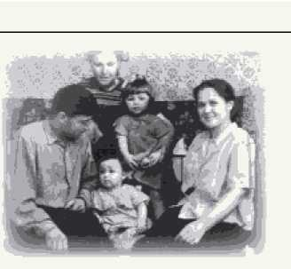
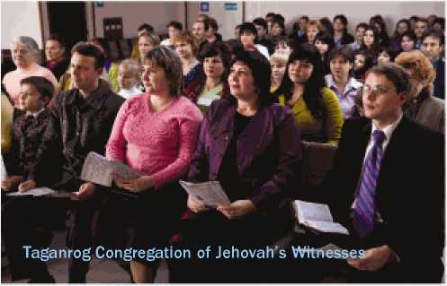
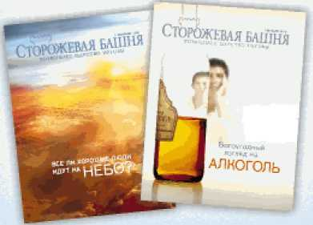

;»»»<» '“tw
A Question Citizens of Russia
“Today is the Day of Remembrance of Victims of Political Repression. ...Itis impossible to grasp the sheer scale of terror that swept across the country. . . [the] millions of ruined lives. Forpeople executed without trial or record; for people exiled and sent to concentration camps, deprived of civil rights for having the ‘wrong’ occupation or the improper social origins. ’. . . Let’s just think about it: Millions of people died because of terror and false accusations. They were deprived of all rights, even the right to a humane burial. For many years, their names were simply crossed out of history. ” —President Medvedev, October 30, 2009, http://blog.kremlin.ru/post/35
WITH those words, President Dmitri Medvedev called on all of us to think seriously about what happened during one of the darkest periods of our history—the brutal repression of millions of our fellow citizens. The President’s words, like the Day of Remembrance, reflect a noble ideal: that recalling the mistakes of the past should prevent those mistakes from occurring again.
The purpose of this tract is twofold: first, to share with you a part of that dark history that you may never have been told about; second, to alert you to a serious danger—that history might, indeed, repeat itself. In fact, there are signs that the process has already begun.
Scarcely mentioned on the Day of Remembrance was the story of one religious minority that has been active in Russia for over a century. This story involves tens of thousands of believers who were persecuted for their faith during those dark decades. Innocent people were uprooted from their homes and locked away for years in prisons and labor camps. Husbands and wives, parents and children, grandparents and grandchildren were heartlessly torn from one another’s arms. Many were never reunited.
That sweeping tragedy had small beginnings. It started with the clever use of rumors, innuendo, and baseless generalizations. Left unchecked, such harmful words grew into lies and outright slander. Then came the bans, house searches, arrests, show trials, exiles, and incarcerations.
The very people who survived those nightmarish years to see better times are now seeing the storm clouds gather once more. A wave of false accusations and terror tactics has again been launched against them. What is happening? Is history really about to repeat itself?
“Whole sectors and classes of our nation were exterminated. . . . Followers of all religious confessions were persecuted. . . . The label ‘enemies of the nation and their ‘abettors’ was applied to entire families” —President Medvedev, October 30, 2009.
PERSECUTION is not new to Jehovah’s Witnesses. Semyon Kozlitsky, the first adherent to this faith in Russia, appeared in 1891 but was soon exiled to Siberia for sharing his faith with others. In the 1920’s and 1930’s, the Bible Students (as Jehovah’s Witnesses were then known) were not many in number, but they were already being persecuted. More recently, the Witnesses were among those repressed during the decades following World War II. Consider a few facts.
• The persecution began with propaganda. Witnesses were labeled as “anti-Soviet,” as “American spies,” and as “enemies of the nation.”
• From 1947 to 1951, more than 9,000 of Jehovah’s Witnesses were exiled to Siberia because of their faith.
The last of the imprisoned Witnesses were released in 1990. Thousands of Jehovah’s Witnesses were thrilled to have their reputation cleared, receiving official documents declaring that they were,
Konstantin Skripchuk, one of Jehovah’s Witnesses, spent 25 years in prison for his faith
2
For being Witnesses, five members of the Klimko family were sentenced to a total of 120 years and served 51
Certificate of Rehabilitation Given to Witnesses
Viktor Gutshmidt with his family a month before his arrest. He spent 10 years in prison for his faith, 3 of them in solitary confinement
not “enemies of the nation,” but innocent victims. The activity of Jehovah’s Witnesses in Russia was legally registered by the Ministry of Justice of the Russian Federation in 1991 and again in 1999.
In Russia today, there are over 157,000 active Jehovah’s Witnesses in more than 2,000 congregations. Another 125,000 people in this land enjoy studying the Bible with the Witnesses. You may have met some of these people, for they are from all walks of life—ordinary, hardworking, honest people. They may be among your relatives, neighbors, coworkers, and friends.
Yet, recent news reports have made the shocking claim that Jehovah’s Witnesses are “extremists.” Labels such as this one and “dangerous sect” and even “American spies” are widely repeated. Like the phrase “enemies of the nation,” such epithets may be used to prepare the way for persecution. Consider the following.
• In February 2009 alone, prosecutors around the country have carried out more than 500 investigations of the religious activity of Jehovah’s Witnesses. • Private medical records have been illegally seized. • Illegal raids have been carried out against public religious meetings and meetings held in private homes.
• Lawyers attempting to assist in the defense of Jehovah’s Witnesses have been harassed and hindered from participating in court hearings.
• Courts around the country have been trying to strip Jehovah’s Witnesses of their legal status and liquidate their congregations.
You may wonder, though: Is there any basis for the accusations against Jehovah’s Witnesses?
CAN you imagine being denounced publicly as extremist or as dangerous? The very words are inflammatory, for they call to mind some of the worst crimes and the most frightening problems of our times. The more the claim is repeated, the more the people believe it. But does that make the accusations true?
Jehovah’s Witnesses simply invite you to see for yourself. We welcome you to visit us in our places of worship, to get to know us when we visit you in our door-to-door work, or to make our acquaintance at work, at school, or in the community. Once you do so, we are confident that you will wonder why anyone would refer to us as dangerous or as extremist.
What is the supposed basis for such attacks? Consider three claims made about the Witnesses, as well as a brief response to each.
CLAIM: Jehovah’s Witnesses endanger the State by sowing religious discord, claiming that theirs is the only true religion.
CONSIDER: Do you know of any religion that does not claim to be the true one? After all, why would people adhere to a religion if they did not believe its tenets to be true? Really, then, all religions are equally liable to the same charge. Perhaps it is more meaningful to ask, ‘How are the adherents of a particular religion taught to treat those with different beliefs?’
FACT: Jehovah’s Witnesses are not a danger to anyone. They are widely known for trying to live by Bible principles. They thus reject all forms of violence. (Matthew 26: 52) They obey secular law. (1 Peter 2:13, 14) They endeavor to make peace in all spheres of life. (Romans 12:18) A reference work edited by M. P. Mchedlov, Chairman of the Expert Council for State Expert Religious Studies With the Ministry of Justice, stated: “Jehovah’s Witnesses view government authority as an arrangement that exists by the permission of God. They do not violate the law, they respect order, and they are law-abiding.”1
CLAIM: Jehovah’s Witnesses are a destructive sect because they break up families.
CONSIDER: In any family, religion can be a sensitive issue, particularly when one member adopts a different faith. Does that mean, though, that the religions involved are to blame for the discord? Or do the individuals bear responsibility for how they handle their new differences? For example, if strife arose in a family when one member converted to Orthodoxy or began to spend a great deal of time at the church, would the Orthodox Church be held responsible? Surely not!
* Religii Narodov Sovremennoy Rossii: Slovar. (Religions of the Nations of Modern Russia: Dictionary) Mchedlov, M. P. et al. Copyright 1999, Respub-lika Publishers, Moscow, p. 462.
FACT: A sociological study carried out by Moscow University in 2001 found that the families of Jehovah’s Witnesses rarely break up. It stated: “The survey analysis shows no negative influence caused by the beliefs and religious activity of Jehovah’s Witnesses on inner-family relationships and on relationships between husbands and wives, parents and children.” The study found that in many ways, “a positive influence resulted from becoming a member.”1
CLAIM: Jehovah’s Witnesses refuse medical treatment.
CONSIDER: If Jehovah’s Witnesses refused medical treatment, then they would not seek medical help; nor would they work as nurses or doctors. Actually, they actively seek the best medical care available for them and their children. They love life, and they love their children. They simply ask for medical care involving nonblood management.
FACT: More and more hospitals around the world are offering medical treatment that does not involve the use of blood. Why? Because many doctors regard bloodless treatment as a higher standard of care. In 2004 the head transfusionologist of the Russian Ministry of Health stated that “refusing transfusions of the primary components of blood is not the same as refusing medical treatment.”1
“There is no excuse for repressions. ” —President Medvedev, October 30, 2009
THE above words offer a measure of hope. Jehovah’s Witnesses feel a debt of gratitude to public officials who have worked tirelessly to put such words into action. Those administrators make a real effort to understand the Witnesses and to defend their right to enjoy freedom of worship.
There are good reasons for such a defense. Contrary to rumors, the Witnesses are not under ban in any country of Europe or North or South America. In a few countries of Africa and Asia where the work of the Witnesses is restricted, the traditional religion is non-Christian, and the government restricts Christian religious activity of almost any kind. Around the world, Jehovah’s Witnesses have been granted a wide array of rights as well as protection from persecution. They are now active in 236 lands, and their number exceeds seven million.
However, do such advances in human rights mean that Russia will never again see a dark era of repression and persecution? All freedom-loving people hope so. Still, we are compelled to ask:
WHY are frivolous investigations allowed to continue, especially when such inquiries have repeatedly found no evidence of any crime?
WHY are Jehovah’s Witnesses being hindered from meeting together peacefully to study the Bible—a right guaranteed by the Constitution of the Russian Federation and by international conventions?
WHY can the Witnesses not freely import their internationally recognized literature and share it with others?
On December 8, 2009, the Supreme Court of the Russian Federation issued a decision declaring a number of our publications “extremist.” Is Russia embracing the elevated ideals of President Medvedev’s words quoted above, or is it now stooping to an ugly campaign of slander and persecution of a religious minority? Only time will tell. Here, though, are two things that are certain in this matter:
First, repression will never succeed. We will not stop speaking tactfully and respectfully about Jehovah God and his Word, the Bible. (1 Peter 3:15) We did not stop when subjected to the horrors of Nazi Germany, we did not stop in the darkest days of our country's repression, and we will not stop now. —Acts 4:18-20.
Second, such words as “dangerous sect,” “enemies of the nation,” and “extremist” have power only as long as people fall under their spell, mindlessly accepting their malicious implications. The tactics of innuendo and slander need not work on you. We hope that you will make the effort to see through such empty talk.
We urge you to find out for yourself the truth about Jehovah’s Witnesses. Our principal journal, The Watchtower appears in 180 languages and has been published continuously for 130 years. Its circulation exceeds 30 million copies per issue. We invite you to read a copy along with your Bible. We look forward to hearing what you think.
CBs/ibiwqY Mi-\BmiE *Nq 5<6e C*zvboHibi'+d'-E 5=>>>>d
© 2009 Watch Tower Bible and Tract Society of Pennsylvania. All rights reserved. T-83-E Printed in Finland, 2009
4
“Scientific Conclusion Based on the Results of Sociological Research Conducted on the Religious Association of Jehovah’s Witnesses in Moscow.” Report by Dr. A. I. Antonov and Dr. V.M. Medkov of the Department of Family Sociology and Demography of the Sociological Faculty in the Lomonosov State University.
# Letter dated February 12, 2004, No. 20 from Ye. A. Selevanov, Director of the Russian Research Institute of Hematology and Transfusiology of the RF Ministry of Health to lawyer A. Ye. Leontyev, St. Petersburg International Board of Lawyers.
If you have questions about the beliefs or practices of Jehovah’s Witnesses, please feel free to ask us in person. More information is available on our Web site www.jw-russia.org.